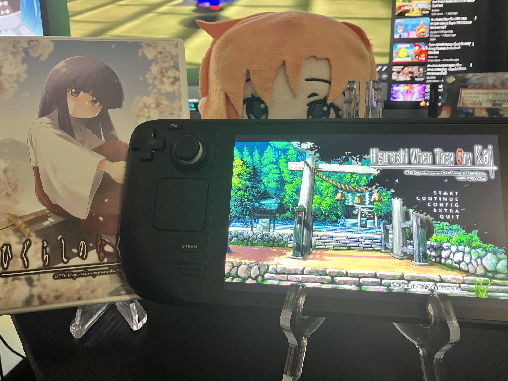

1game1week - Week 20 (5/14/25) - Higurashi When They Cry: Chapter 7 - Minagoroshi
Hey all! It's week 20! (5/14 -> 5/21)
I hate dieting. It's stupid. I miss having breakfast. Why can't I have my metabolism from when I was young?
Drives me crazy. It all used to be so easy... Eat anything without any repercussions. TT-TT
Well... I still do kinda eat whatever I like. And I've been losing weight at a decently steady clip. So I can't complain.
I bought a job lot of Genesis consoles the other day, they should be arriving Monday ish. I'm really excited to get to repair them, even if the repairs themselves seem very simple.
First time I'm even touching a Genesis. I was born a year-ish before the Dreamcast released so I wasn't able to really grow up with Sega consoles. We were mostly a Nintendo household.
While I'm unsure if I'll go through with it, I'm really considering streaming myself working on them, for fun. I've actually been streaming myself playing Final Fantasy XVI lately. Streaming's really enjoyable, so hopefully I can see some of you guys at https://twitch.tv/hoshikawa_aru
New games from 5/7 -> 5/13:
Tokimeki Memorial ~forever with you~ Emotional (Switch)
Currently, my backlog is at +11 (lower is better, +1 from last week).
And onto 1g1w. Once again, a game is considered "beaten" if I've accomplished the main objective of the game.
GAME: Higurashi When They Cry: Chapter 7 - Minagoroshi
PLATFORM: PC (Steam Deck)
STARTED ON: 4/12
BEATEN ON: 4/17
TOTAL PLAYTIME: 31.1 Hours
Okay... I know I've posted a lot of Higurashi lately. I promise... there's only one left after this in Week 24.
There is that can really be 'gone over', that I haven't already touched in previous posts talking about this franchise, so I won't really bother.
It's good! I promise! Chapter 1 is completely free on Steam, so please give it a try!
Also- back in Week 15 I linked a stream vod of my friend Billy and I talking with streamer razorthecurse about Chapter 4. razor has now uploaded the vod for our discussion for Chapter 5. You can find it here- spoilers ahead:
That's all for now. See you all next week! Stay safe!

Thanks for reading! If you need to contact me for any reason, please feel free to email me at aru@hoshikawa-aru.com.